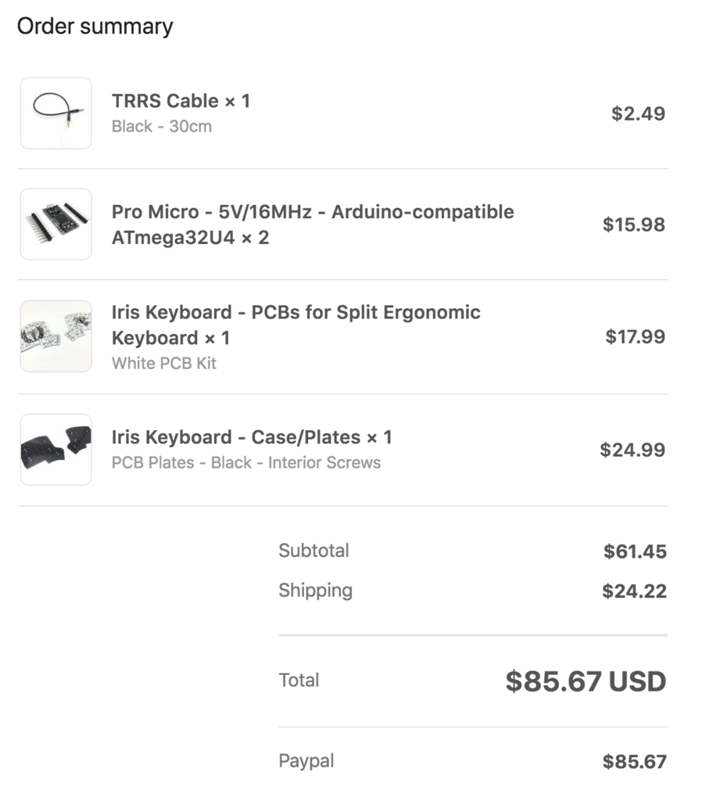
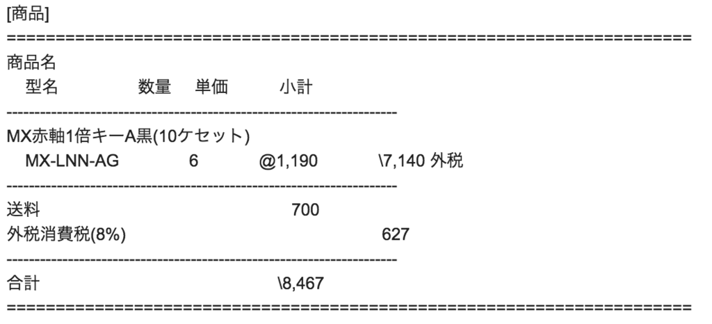

Irisの部品を購入しました
Iris
- ErgoDox EZを買って、試行錯誤しつつ、キーボードのスタイルを探っていた
- 自分の手の動きを観察すると、腕を動かしすぎてる気がした
- レイヤーの機能を使えば、手や腕の動きを最小限にできそう
- 最小限の構成とすると、6列3段+親指キー3つでいける気がする
- ErgoDoxでこの構成で試しているが、行けそうな気がする
- ErgoDoxはとても良いのだが、
- キーが多く、スペースを取りすぎてる感がある
- 親指の島がちょっと離れているので、フル活用できていない
- 探して見ると、
- ということで、Irisを購入することにした
- ErgoDox EZは完成品だが、Irisは部品を調達して、自分で組み立てなければならない
- 電子工作の経験は若干しかないが、まあ大丈夫かな
- Irisはググると作業手順を細かく紹介してくれているものが多いので心強い
購入
-
Irisという超絶キュートなキーボードを作成した話 - シンクロ・フード エンジニアブログを参考にさせていただき、ネットで購入した
-
基盤やケースなどはKeebioというところで購入 
-
キースイッチ、キーキャップは日本のジェイダブルシステムというところで購入。互換品の方が安く済みそうだが、今回は諸事情あってこれで。 
また、届いて組み立てたら書きたいと思います。